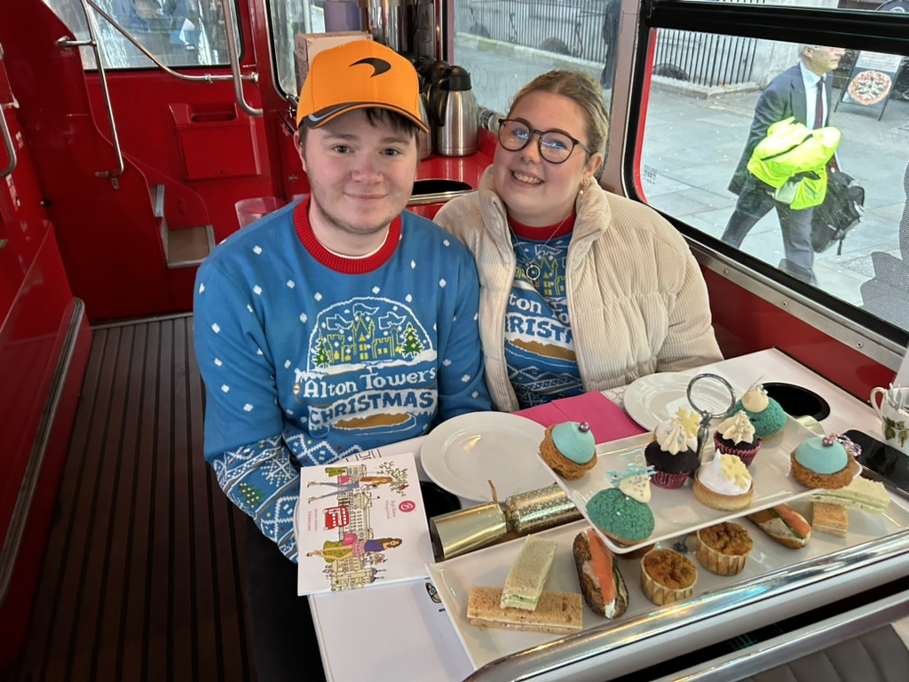

With a later start this morning of 8:30, with sadly no premier inn breakfast we made our way to the train station to head into St Pancreas. Once we were off the train we headed over to the shop where we were going to drop our bag off for the day, on the way we managed to see Louis Theroux filming something of some sort. Once our bags were dropped in at a bag drop for the day we set off walking into London again.
The first stop of the day was Leicester Square, our plan to eat something in the market for breakfast was soon squashed as it didn't open until 12 pm, so we compromised and ended up with a Greggs for breakfast, which in my eye was a good compromise. Breakfast was all done so we headed into the Lego Shop for the final time of the trip, Jake made a small purchase from the Lego shop. Across the street from Lego was the M&M store so we had a little look around the shop, tempted by the chocolate but headed out without any. Next up was a bucket list moment as we headed to Europe's biggest Waterstones, which was 6 floors of pure happiness. With Jake taking a seat on a chair I had free rain of the bookshop, I made a small purchase in the end.
Next me and Jake were feeling fancy so we had a walk around Harrods and spent a bit more time in the kid's toy section than we'd like to admit. We walked through most of the areas of Harrods missing out on the ones that would make us feel the most skint. Buckingham Palace was the next port of call because if you don't see Buckingham Palace you haven't done London. We had a short rest around the park area to rest our feet then we headed off to our next location. Jake ended up taking us on a whole loop circle trying to get there but ended up arriving at Afternoon Tea on a bus which was kindly gifted by Jake's Mum. The bus took us on a 1 hour and 30-minute trip around the sights of London all while enjoying afternoon tea.
Next, we were on to the Trafalgar Square Market after the bus ride, where we had to pay 20p to have a wee, the most expensive wee I've had! We took a stroll through the Market and then headed down Oxford Street. We had a look around John Lewis, the Disney store where I made a small purchase we moved onto Primark which we walked into and walked back out again, why we thought it was a good idea we will never know. It was getting to the time we needed to head for food and then the train. We stopped and ate in German Donner Kebab which was 10/10, then took a slow walk to collect are bag from the bag drop shop and headed into St Pancreas. We were in the Station much earlier than we thought so we headed back out to get a milkshake for Jake from Five Guys and headed back in for the train.
The train was on time and was smooth sailing we ended up arriving 15 minutes later than we should've because of some issue at the Sheffield station. Tiredness had kicked in so to be back in Sheffield was all that mattered after a jam-packed few days for Jake's Birthday.
Thank you all for reading!